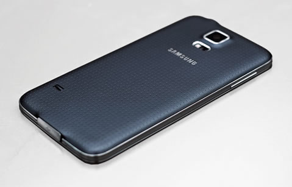
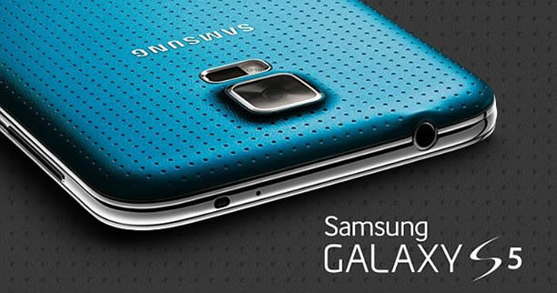
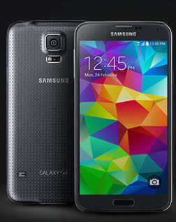

.jpg) |
Es el chaebo más grande de Corea del Sur que goza de gran reconocimiento a nivel mundial, también es líder mundial en diversas ramas de la industria electrónica; comenzó como una compañía exclusivamente de exportaciones en 1938.
Samsung Mobile es el nombre comercial de la división de teléfonos inteligentes de la compañía de Corea del Sur.
Los teléfonos móviles Samsung usan las tecnologías utilizadas por los principales operadores de telecomunicación móvil en el mundo: CDMA, GSM, GPRS y HSDPA.
|
El Samsung Galaxy S5 es el nombre común de una serie de teléfonos inteligentes de gama alta fabricados por Samsung, que funcionan con el sistema operativo Android Kit-Kat versión 4.4. Predecido por el Samsung Galaxy S4 en la familia de teléfonos inteligentes de alta gama de Samsung, y por el "Samsung Galaxy S4 Active" de la serie "S" de Samsung Galaxy. Fue anunciado en enero de 2014 y su presentación fue el 24 de febrero del mismo año en el Mobile World Congress en Barcelona. Fue presentado oficialmente el 11 de abril de 2014
|  |  |  |